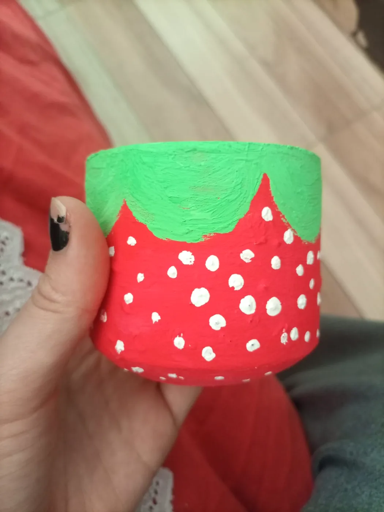
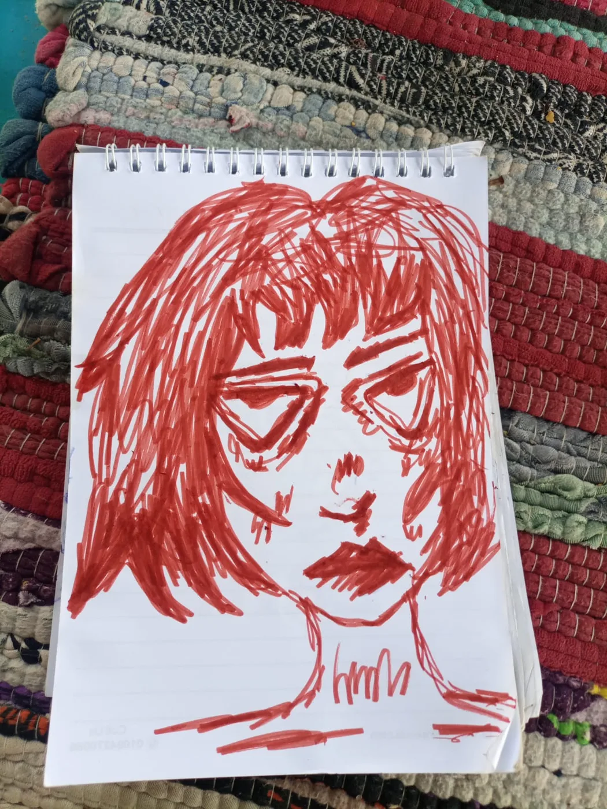
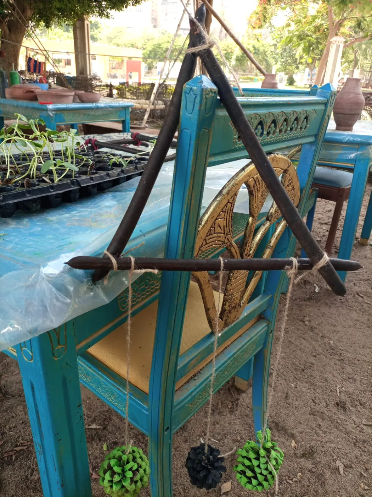
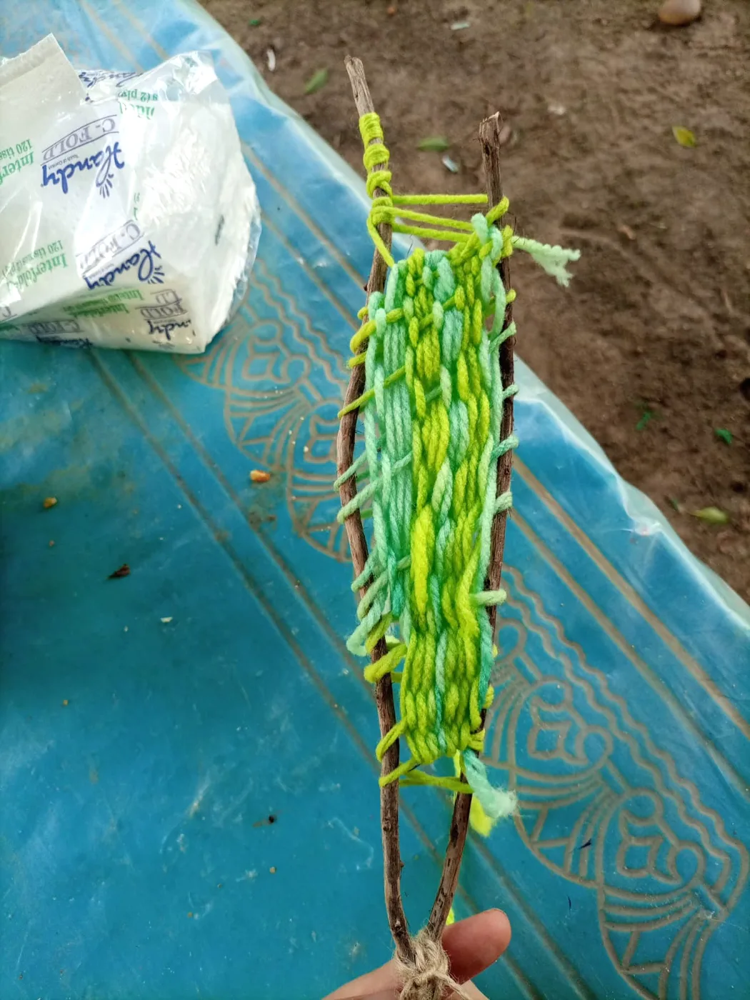
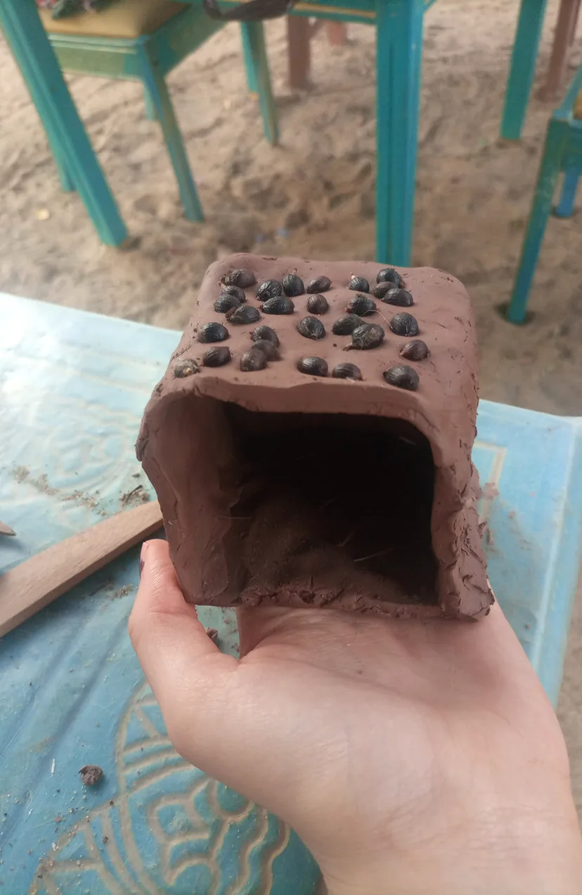
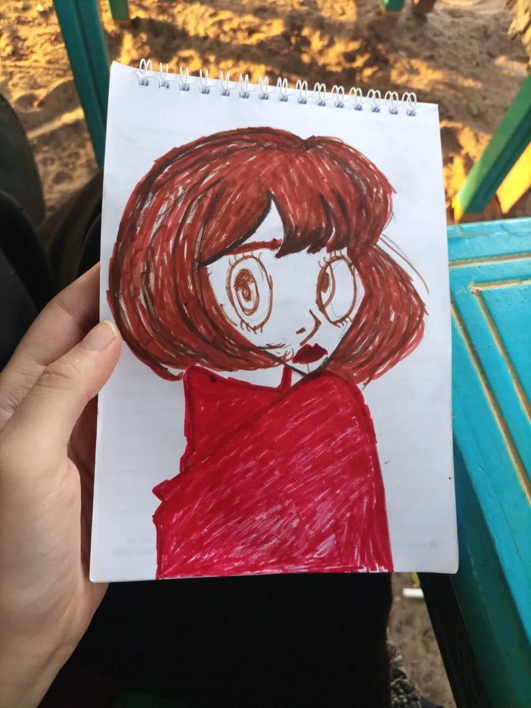

I sketch ideas.
Then make them.
I’m Salma Gamal, an Arts & Crafts Instructor. I draw, weave, paint, and turn everyday materials into handmade pieces.

ARTIN EVERY
DETAIL ✳


I draw, weave,
and try new materials.
I work across paper, fabric, painted objects, yarn, clay, and found materials. I enjoy moving between expressive drawing and objects shaped by color, pattern, and texture.
As an Arts & Crafts Instructor, I love helping people learn through making. I have guided participants in hands-on clay work and enjoy sharing creative processes in a welcoming setting.
A closer look at
what I make.
From my sketchbook to woven pieces, decorated objects, and experiments with materials.
IN THE ARCHIVE
New life for
found materials.
I enjoy turning simple, found materials into decorative pieces. These hanging forms combine natural branches, pinecones, color, and handwoven yarn.
The process is playful: I look at the shape and texture of each material, then build a piece around what makes it interesting.
Explore my decoration work ↗

CLAY / FORM / DISCOVERYSharing the
making process.
I have guided participants in building traditional Aswan-style clay houses through hands-on learning and creative exploration.
I enjoy making room for questions, experimentation, and the satisfaction of creating something with your own hands.

A SKETCHBOOK FULL OF POSSIBILITIESArt I can
hold and share.
I’m Salma Gamal, an Arts & Crafts Instructor with a passion for handmade work, textile weaving, decoration, and clay art.
I weave bracelets and coasters, draw characters, paint fabric and small objects, and reuse materials for handmade decor. I’m open to creative workshops and collaborations.